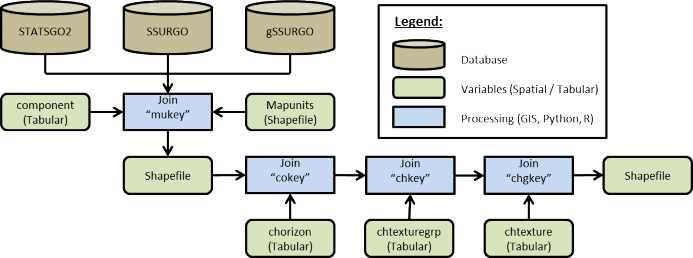
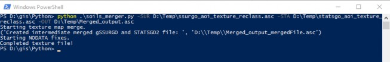
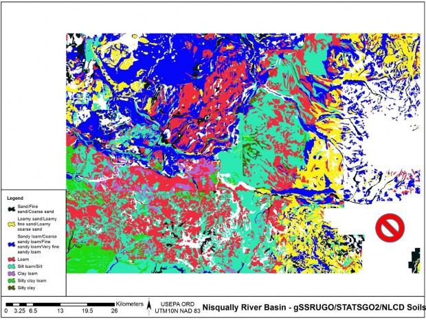
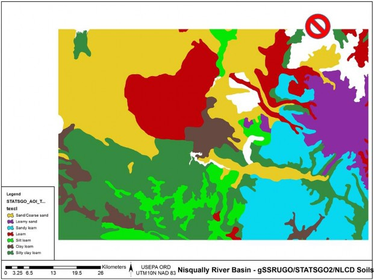
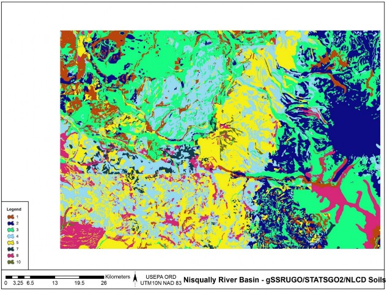

D.2 | Soil Data Mapping and Parameter Initialization
Overview (Tutorial D.2 - Soil Data Mapping and Parameter Initialization)
This tutorial describes the minimum data input files required to run the VELMA simulator, where to acquire them, and steps to prepare them for a VELMA simulation.
Soil Data Sources
- gSSURGO
- gSSURGO User Guide (PDF; 10.7 MB) Soil Survey Staff. Gridded Soil Survey Geographic (gSSURGO) Database for Washington. United States Department of Agriculture, Natural Resources Conservation Service.
- STATSGO2
- Soil Survey Staff. Gridded Soil Survey Geographic (STATSGO2) Database for Washington. United States Department of Agriculture, Natural Resources Conservation Service.
Soil Data Pre-Processing
To create a thematic soil texture map for either the gSSURGO, SSURGO, or STATSGO2 data sets the one too many to many hierarchies of relationships must be resolved with spatial map units and tabular data. Both soil tabular and spatial data tables are included when any of the data sets are downloaded from the USDA. For a complete overview of relationships, refer to the SSURGO/STATSGO2 documentation "SSURGO 2.2 Data Model - Diagram 1 of 2". To link the spatial map units to their textures a series of joins must be made between the tabular text file and the Shapefiles (Figure 1).
Figure 3. Spatial join process
Example: Tolt River Watershed Soil Data Pre-Processing
- Within ArcGIS, load the STATSGO2 shapefile "gsmsoilmu_a_wa.shp"
- Using the "Join Field" (Data Management) tool set:
- Input Table = "gsmsoilmu_a_wa.shp"
- Input Join Field = "MUKEY"
- Join Table = PATH + "component"
- Output Join Field = "mukey"
- Join Fields (optional) = CHECK "cokey"
- Repeat "Join Field" for the C horizon, chtexturegrp, and chtexture tables to the final texture column.
- Dataset 1.
- In cases where the gSSURGO soil textures were initially classified under subclass, the soil textures need to be re-classified to their parent class of the USDA Soil Survey Manual, Chapter 3 (USDA, 2017) of the soil triangle textures that are used by VELMA (Figure 2).
- Sands <- Coarse Sand, Sand, Fine Sand, Very Fine Sand
- Loamy Sand <- Loamy Coarse Sand, Loamy Sand, Loamy Fine Sand, Loamy Very Find Sand
- Sandy Loams <- Coarse Sandy Loam, Sandy Loam, Fine Sandy Loam, Very Fine Sandy Loam
- Silt Loam = Silt
- In cases where the gSSURGO soil textures were initially classified under subclass, the soil textures need to be re-classified to their parent class of the USDA Soil Survey Manual, Chapter 3 (USDA, 2017) of the soil triangle textures that are used by VELMA (Figure 2).
Figure 4. USDA Soil texture triangle
Replaced all missing gSSURGO soils texture cells with STATSGO soil textures, creating a merged high- and low-resolution soils data layer (Table 1, Figure 4, Figure 5, and Figure 6).
Table 1. Soil texture key for VELMA

File Name tolt_ssurgo_statsgo_soil.tif
| Key | value |
|---|---|
| 1 | sand |
| 2 | loamy sand |
| 3 | sandy loam |
| 4 | loam |
| 5 | silt loam |
| 6 | sandy clay loam |
| 7 | clay loam |
| 8 | silty clay loam |
| 9 | sandy clay |
| 10 | silty clay |
| 11 | clay |
Software Requirements and Processing
To run and produce the merged soil texture map (ASCII), you will need the following:
- Python version 2.x: Current release is 2.7.11
- Python comes pre-packaged within ArcGIS, so it is likely you already have it installed on your computer. For example, a default install is currently here: C:\Python27\ArcGIS10.2\python.exe. Check to see if you have Python installed before installing a new version. If Python is not installed, you can obtain a copy here: https://www.python.org/download/releases/2.7/ Note that Python 2.7 is currently considered safe for use on U.S. EPA network and non-network computers.
- ASCII Map requirements:
- gSSURGO ASCII format (.asc) for the AOI and a STATSGO2 ASCII format (.asc) for the AOI.
- Cell values set to match the soil texture key for VELAM (Table 1).
- No-data cells values set to -9999, which is the default ERSI ASCII no data value.
- These map(s) should match the exact extent and resolution of the AOI / DEM ASCII regardless if they are higher resolution.
- Output filename to be determined by the user, ASCII format (.asc).
- gSSURGO ASCII format (.asc) for the AOI and a STATSGO2 ASCII format (.asc) for the AOI.
- "Soil_merger.py" and can be run on the Command Prompt line with Python. This script requires at a minimum a gSSURGO map, one STATSGO2 map, and one output file name. The script will output an intermediate merged file map with No-data values. The merged soil texture values will assign values to the output map from the higher resolution gSSURGO map first and then from the STATSGO2 map. The final output map will fill No-data values with soil texture values. The technique uses a nearest neighbor search algorithm that will radiate out in one cell radius increments searching for the nearest cell with a valid texture value which will then be assigned to the No-data cell.
Command prompt input example:
"python .\soils_merger.py -SUR D:\Temp\ssurgo_aoi_texture_reclass.asc -STA D:\Temp\statsgo_aoi_texture_reclass.asc -OUT D:\Temp\Merged_output.asc" "python C:\Path\To\soils_merger.py -help"
for exact arguments (Figure 4).
Figure 5. Windows PowerShell python example
Figure 4. gSSURGO Soils texture and NODATA
Figure 5. STATSGO Soils texture and NODATA
Figure 6. Merged soils, gSSURGO and STATSGO.
References
Soil Science Division Staff. 2017. Soil survey manual. C. Ditzler, K. Scheffe, and H.C. Monger (eds.). USDA Handbook 18. Government Printing Office, Washington, D.C.
Scripts
soils_merger.py
# Author: Paul Pettus # Date: 10-20-2017
# Description: Merge STATSGO2 and gSSURGO soil texture ASCII Maps #
# Output is a single ASCII map that will have an assigned soil texture value # for every cell
#
# By default, cell values will be first assigned the value of the higher
# resolution gSSURGO and if no data exists in the gSSURGO map values # will be assigned to the output from the lower resolution STATSGO2. #
# If no values are found in either soil input maps, nodata cells will
# be assigned a nearest neighbor value from a circling radial stepping
# algorithm. The stepping algorithm steps one cell radius per iteration until # it finds a soil texture cell value. The algorithm ignores border cells.
#
# Last updated: 11-16-2017
import os, sys, numpy, re, argparse, itertools
# Error message class
class Usage(Exception):
def __init__(self, msg):
self.msg = msg
def main(argv=None):
if argv is None:
argv = sys.argv
try:
parser = argparse.ArgumentParser(description='Output is a single ASCII ma that will'+ ' have an assigned soil texture value for every cell')
parser.add_argument('-SUR', action='store', dest='surFILE',default='D:/GIS/Nisqually/Soil/ssurgo_aoi_texture_reclass.tif.asc', help='Fully-qualified path + name of ".asc" gSSURGO soil texture file.')
parser.add_argument('-STA', action='store', dest='staFILE',default='D:/GIS/Nisqually/Soil/statsgo_aoi_texture_reclass.asc', help='Fully-qualified path + name of ".asc" STATSGO2 soil texture file.')
parser.add_argument('-OUT', action='store', dest='outFILE',default='D:/GIS/Nisqually/Soil/build_old_timey_mudButt_6.asc', help='Fully-qualified path + name of ".asc" output file.')
args = parser.parse_args() # args parsing
ssurgoAsc = os.path.abspath(args.surFILE)
statsgoAsc = os.path.abspath(args.staFILE)
buildFile = os.path.abspath(args.outFILE)
# Check that files exists
if not os.path.exists(ssurgoAsc):
raise Usage('Cannot find AOI file "' + ssurgoAsc + '"')
if not os.path.exists(statsgoAsc):
raise Usage('Cannot find AOI file "' + statsgoAsc + '"')
# do the work
mergeSoils(ssurgoAsc,statsgoAsc,buildFile)
except Usage as e:
print(e.msg)
return 2
except Exception as e:
# STUB exception handler
# Warning: poor programming style.
# Catches almost any exception (but not KeyboardInterrupt -- which is a Good Thing)
raise e
# Return an ascii file header
def readHeader(asciiFile):
if not os.path.exists(asciiFile):
raise Usage('Cannot find ASCII "' + asciiFile + '"')
# Open file and read in header info
readFile = open(asciiFile)
header = readFile.readline() #ncols
header += readFile.readline() #nrows
header += readFile.readline() #xllcorner
header += readFile.readline() #yllcorner
header += readFile.readline() #cellsize
header += readFile.readline() #NODATA_value
readFile.close()
return header
# Loop by one + one cell radius of surrounding cells to find nearest neighbor cell value
def lookAround(passRow,passCol,inArray):
inRow, inCol = inArray.shape
# Initial search radius at one cell radius = 1
found = False # found a value
# Loop by one + one cell radius of surrounding cells to find nearest neighbor cell value
while found != True:
rowList = [0]
colList = [0]
# Create search box of one cell distance
if radius == 1:
for i in xrange(radius):
for j in xrange(radius):
rowList.append((i + 1) * -1)
rowList.append(i + 1)
colList.append((i + 1) * -1)
colList.append(i + 1)
# creates a list of the relative coordinates which to search around the missing value cell
setList = list(itertools.product(rowList, colList))
# Else cell radius is larger than one cell
else:
rowList = [0]
colList = [0]
# Create an inner one radius cell shorter search box
# Keeps track of already searched cells in radius
for i in xrange((radius-1)):
for j in xrange((radius-1)):
rowList.append((i + 1) * -1)
rowList.append(i + 1)
colList.append((i + 1) * -1)
colList.append(i + 1)
minusList = list(itertools.product(rowList, colList))
rowList = [0]
colList = [0]
# Create an full radius cell search box around the missing value cell
for i in xrange(radius):
for j in xrange(radius):
rowList.append((i + 1) * -1)
rowList.append(i + 1)
colList.append((i + 1) * -1)
colList.append(i + 1)
fullList = list(itertools.product(rowList, colList))
# Select only the out radius cells from full box list
setList = list(set(fullList) - set(minusList))
for item in setList:
# Check that searched cells are not out of array bounds
if ((passRow + item[0]) >= 0) and ((passRow + item[0]) < inRow) and ((passCol + item[1]) >= 0) and ((passCol + item[1]) < inCol):
# nearest neighbor cell value and return it
value = inArray[(passRow + item[0]),(passCol + item[1])]
if value != -9999:
found = True
return value
# Increase radius by a cell if NA / no values are found
radius = radius + 1
# Merge SSUGO STATSGO Soils, then replace nodata values
def mergeSoils(ssurgoAsc,statsgoAsc,buildFile): # Load ssrgo array file
ssgoArray = numpy.loadtxt(ssurgoAsc, skiprows=6) # Load statsgo array file
statsArray = numpy.loadtxt(statsgoAsc, skiprows=6)
row, col = ssgoArray.shape # Create new merge array
mergeArray = numpy.zeros((row,col))
print("Starting texture ma merge.")
for i in xrange(row):
for j in xrange(col):
# Get soil values
ssgoValue = ssgoArray[i,j] statsValue = statsArray[i,j]
# Assign higher resolution ssurgo values first
if ssgoValue != -9999:
mergeArray[i,j] = ssgoValue
# Assign lower resolution statsgo next
elif statsValue != -9999:
mergeArray[i,j] = statsValue
# Assign no data value if neither has a set has a value
else:
mergeArray[i,j] = -9999
# Merged ssurgo statsgo, export complete ascii
fileName, fileExtension = os.path.splitext(buildFile)
mergeFile = fileName + "_mergedFile" + fileExtension header = readHeader(ssurgoAsc)
f = open(mergeFile, "w")
f.write(header)
numpy.savetxt(f, mergeArray, fmt="%i")
f.close()
print("Created intermediate merged gSSURGO and STATSGO2 file: ", mergeFile)
reloadArray = numpy.loadtxt(mergeFile, skiprows=6)
noDataArray = numpy.zeros((row,col))
print("Starting NODATA fixes.")
# Replace nodata cells with search radius algorythm
for i in xrange(row):
for j in xrange(col):
mergeValue = reloadArray[i,j]
# if nodata, send to search algorythm
if mergeValue == -9999:
newValue = lookAround(i,j,reloadArray)
noDataArray[i,j] = newValue
# else keep merged data value
else:
noDataArray[i,j] = mergeValue
# Merged ssurgo statsgo and nodata filled, export complete ascii header = readHeader(ssurgoAsc)
outputFile = buildFile
f = open(outputFile, "w") f.write(header)
numpy.savetxt(f, noDataArray, fmt="%i") f.close()
print("Completed texture file!")
if __name__== "__main__":
sys.exit(main())
# Old code for internal testing only
################################################################################################
## Modify files and locations ################################################################################################
## SSURGO ASCII file
##ssurgoAsc = "D:/GIS/Nisqually/Soil/ssurgo_aoi_texture_reclass.tif.asc" ### STATSGO ASCII file
##statsgoAsc = "D:/GIS/Nisqually/Soil/statsgo_aoi_texture_reclass.asc" ### SSURGO and STATSGO merged ASCII file, intermediate ##mergeFile = "D:/GIS/Nisqually/Soil/merged_soils_5.asc"
### SSURGO and STATSGO merged ASCII file with nodata fixed, final output ##buildFile = "D:/GIS/Nisqually/Soil/build_old_timey_mudButt_5.asc"
################################################################################################ ##
### Call main function to merge and replace nodata values ##mergeSoils(ssurgoAsc,statsgoAsc,buildFile)